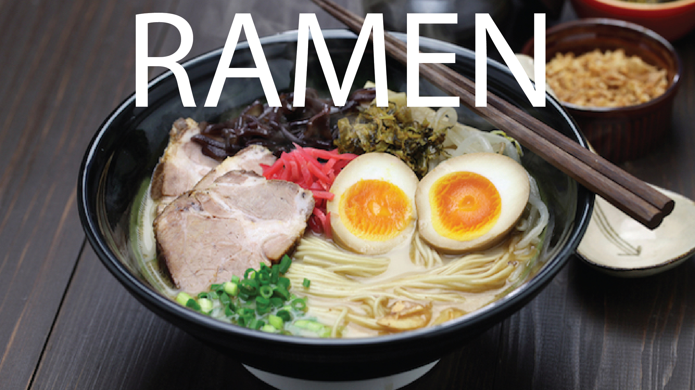
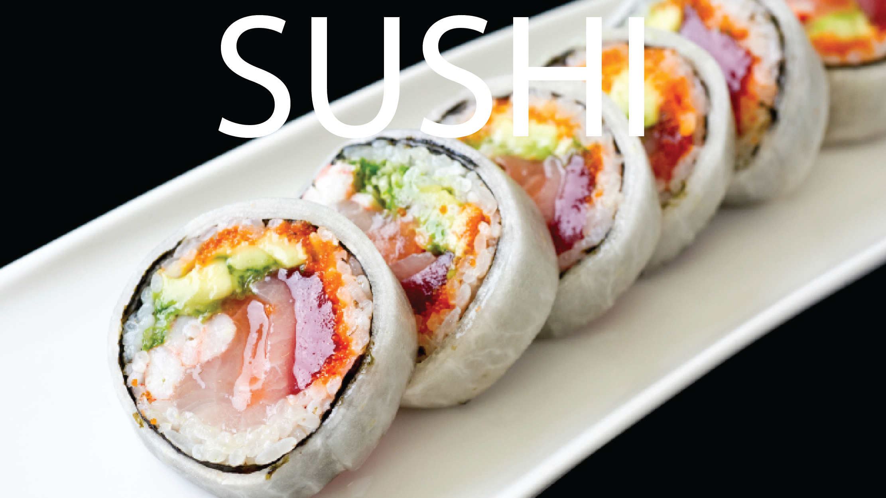
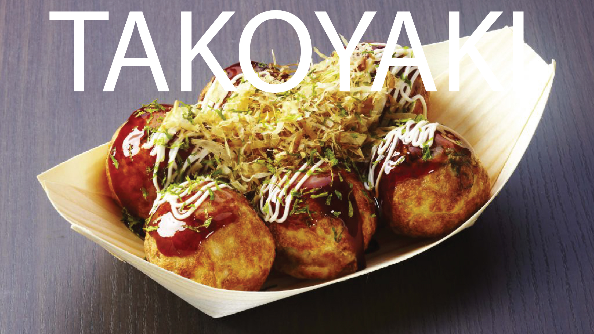
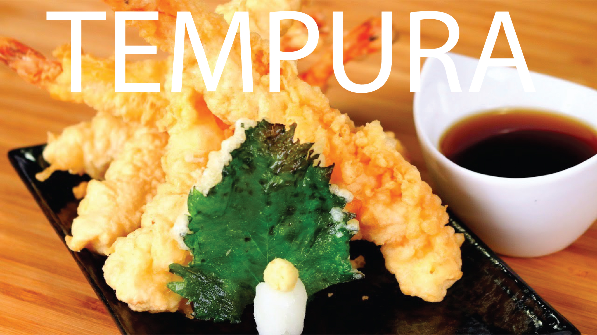

What is : Ramen is a Japanese dish with a translation of "pulled noodles".
Menu : Ramen Chicken, Ramen Beef, Ramen Vegetable, Read More

What is : Sushi is a Japanese dish of prepared vinegared rice, usually with some sugar.
Menu : Norimaki, Oshizushi, Inarizushi, Read More

What is : Takoyaki is a ball-shaped Japanese snack or appetizer made of a wheat flour-based batter and cooked in a special molded pan.
Menu : Takoyaki Chicken, Takoyaki Beef, Takoyaki Vegetable, Read More

What is : Tempura is a Japanese dish usually consisting of seafood or vegetables that have been battered and deep fried.
Menu : Tempura Chicken, Tempura Beef, Tempura Vegetable, Read More